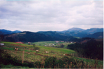
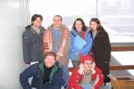

| |
||
| |
||
José María Román Faúndeze-mail: josemaria.roman@frenetic.ai webpage: https://www.frenetic.ai/ |
||
| |
||
|
|
The Story of my Life: What have I done not to deserve this?I was born in Zamora (Spain), and I lived for about one year in my father's village, Alcañices. This is a small village, capital of the territory called Aliste, in the countryside of Spain, on the northeast border with Portugal. My mother's village, which is even smaller, is called Sejas de Aliste, and is the place where I used to spend my whole summer vacation when I was a teenager, visiting my grandfather, el tí Rufino, as he was known in the village. I really appreciate those days, not just for the fun and good times I had with some of my oldest friends, but for everything I learned about the small things, like working the land, and taking care of farm animals, since you do not deal with these things in the urban environment. After the first year in Zamora we moved to the Basque Country. This is an industrialized region located by the sea on the north coast of Spain. We lived in Yurre (Vizcaya), a small village with a population of about 3000 people, for the rest of my childhood. You know, I attended primary school, played football, definitively not my speciallity, run through the woods looking for mysterious sites, and that kind of stuff. This was the ideal village for it. The village is located in the valley of Arratia, one of the inner and narrow valleys of Vizcaya, which makes the weather so humid. As time went by I learned to love that kind of weather, and now whenever there is a cloudy, humid, foggy day I am very happy. It reminds me the warmth of home.  When I was sixteen my family moved to Amorebieta, a town ten kilometers away from Yurre, and twenty from Bilbao, and near other famous towns as Durango and Gernika. Amorebieta, in the valley of Ibaizabal, which means the valley of wide river (ibai=river and zabal=wide), as it comes from Euskera (Basque), ancient language of unknown origin spoken in the north of Spain and southwest of France, is a town of 20,000 people. I spent here my High School and College years. I can remember playing cards with my friends in between classes in High School (my friends cheated, of course) and the principal coming by and preaching us about it, how I was being spoiled and perverted by such bad friendship. She said: ``Esto parece el Far West, solo os faltan las pistolas'' (This is like the Far West, you just need for the guns). What a shame, too bad, too bad. I have to say that at the end all of us are doing well, no one finished in jail, although I could end up in Yale, but just if I kill somebody, eh Ivo? After two years
in High School I went to Collage in the Universidad del
País Vasco, very near home, not to disappoint the
Spanish tradition of staying home until you are about
forty (I do not understand how people do not feel ashamed
about it). So, living
on campus, as a friend said: "it looks like we live here if it wasn't that we
sleep at home", I completed my major in Physics
after five years of up-and-downs, like la agoñía
in the dark side, or el txoko, or that visit to
Lisbon during the last year, in the moments to be
remembered, just a glimpse of what was about to come in
the future, because it looks like the circle always closes
upon itself. Finally, we, the class of '94,
graduated on San Fermín's Day, July 7th (Viva
San Fermín, ¡aupa!). We even had a graduation
ceremony, the first one, organized by the new Dean of the
Faculty of Science, Manolo
Tello, je, je,
je, ¡qué bonito es ser joven! (it is good to be
young!), what a character! I don't know exactly why I studied Physics, because what I really wanted to do was Medicine and be useful to society. With all this in my mind I was offered the possibility of going to Barcelona (Catalonia, Spain), to work in the Ph.D. program in the Universitat de Barcelona. I accepted that offer because I was misled by the name of the title I would receive after my graduation: "doctor". Anyway, I graduated as a so-called doctor from the University of Barcelona four years and four days after I arrived in there, what a sentence! The experience was, let's say, interesting. It brought me back to my roots, and I graduated with a txapela (typical Basque cap), and a botijo (a clay container which keeps water cool). Sometimes, though, I regret not having used my bazooka. Yes, because I had a bazooka. It was a present from my friends, who could not stand seeing how much I suffered in the SUSY classes, so they decided to provide me with an instrument to release my tension. The biggest deception came when I was told after the graduation that I would not be able to prescribe pills despite my title. It would have been fun to decide which pill, the green, the yellow, the red, or the blue one, is more convenient for my patients from the look of their faces as they entered my office. Unfortunately for me it could not be, and in order to overcome such a big disappointment in my life I went to the University of Illinois at Urbana-Champaign, Illinois, USA. Champaign-Urbana, in the middle of the prairie, is a very good place for meditation, even a little bit depressing if you are not very forward, because there are very few people walking in the streets, despite, or because of, its two downtowns and the campustown. Although it is more dramatic in Thanksgiving or Spring Break, when this resembles very much a phantom city. Fortunately, in the following years we learned how to cook the Thanksgiving Turkey, and left on a Spring Break trip ourselves. This is a marvelous place if you enjoy Spring and Fall seasons, and I definitively am a Fall person. So, after a while you get used to living in such a quiet place, and you know good friends, which make it hard for you to accept you have to leave. However I left knowing that a small piece of my heart would remain here. After all, everything gives credit to the lyrics of the Flat Champaign-Urbana song, whose chorus reads: Flat Champaign-Urbana,
Land of orange and blue Think 'bout leavin' ya, ev'ry day But I keep comin' back t' you After the American
experience I came back just to leave again, much nearer
this time, for Portugal. I almost cannot decide a
place to talk about, since my six months there were a tour
which took me to most of the cities: Évora, Medieval town
with a wall and a Roman Temple dedicated to Diana,
Coimbra, with the oldest university in Portugal and
beautiful gardens and footpath along the river Mondego,
which meets the ocean in Figueira da Foz, ah! impressive.
Oporto, very nice people there, Lisbon, like a very large
town, very cozy, Braga, so... Galician. It is
incredible that despite the fact I am from a village five
kilometers away from Portugal I had never visited it with
such intensity. I have to grant all the honor to my
hosts in the Universidade
de Évora, who were really nice to me and showed me
around. They where even kind enough to allow me
destroy Portuguese speaking what is know as Portuñol, a
mixture of Portuguese and Spanish (Español). This is
very nice, because I always wanted to know why people in
my village had such strange expressions; and they are not
strange, they are Portuguese. Finally I returned to Spain to work
in the Consejo Superior
de Investigaciones Científicas (CSIC), where I was
having fun squishing the computers to their maximum
performance, or to my maximum performance to be
accurate. Going to the Universidad
Autónoma de Madrid campus, outside the city, was a
relief, since the trees, grass fields and little birds
take you away from the stress and traffic jams, and after
all you can always stop by the center on your way home to
meet your friends, watch a movie, go for a stroll to el
Retiro... so many things to do, and so little time.
But what I always had time for was for participating in
the demonstrations against everything, mainly the
government, because Spain
is not doing
well, and this is really fun and relaxing,
believe me, I am almost a professional now. One more
thing about Madrid is that it is not far from anywhere in
Spain, and I could go home whenever I felt like having
mom's meals, and she is very happy to have me there
anyway, so it is great! In the end it looks like
large cities are not for me, so I decided to move again,
this time to Zaragoza. This is a nice place, and if
you get there during Pilar's holidays you will want to
repeat again and again. I registered at the Universidad
de Zaragoza for an European Master in
Renewable Energy, where I met many enthusiastic
people wanting to make of this a much better world, let's see if we can get it!
Since it is an European Master after three months I moved
to the Northumbria
University at Newcastle
upon Tyne in England for my specialization in
Photovoltaic Solar Systems (I'm gonna soak up the sun... Sheryl Crow
says). I always liked Newcastle Brown Ale, so
this is the place to be; you can get it here in very large
bottles, draft and I bet you can even buy a
barrel. And this city reminds me a lot of
Bilbao. So, perhaps I am just feeling nostalgic and
that is the reason I like places like this; and Spring is
comming.
This is a short version of my life. There are so many people out there who deny themselves the right to understand the world as a whole, and concentrate just on what they think are the important problems, that we will be in trouble if we allow them to rule our lifes. Sometimes I have been asked for the place I consider as home. Of course, there exist such a place where you feel comfortable and protected whenever you go. However, should we not love every place we visit, and learn to integrate all the experiences we get there to improve our lifes and make the world a better place to live? And as for what I deserve or do not deserve let's talk about it any other time. |
{kind=link}
{kind=link}
{kind=link}
{kind=link}
{kind=link}
{kind=link}
{kind=link}
{kind=link}
{kind=link}